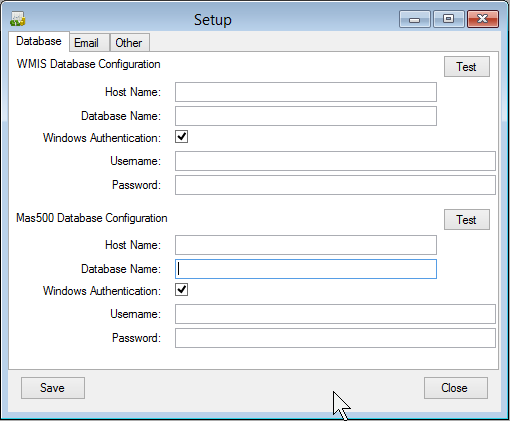
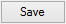

The Database tab is used to define connections to WMIS and Mas500 databases.

WMIS Database Configuration
This group of settings are used when the application requires data
from the WMIS database/application. These settings are used to connect
to the Microsoft SQL Database.
Mas500 Database Configuration
This group of settings are used when the application requires data
from the Mas500/Sage ERP database/application. These settings are
used to connect to the Microsoft SQL Database.
- If using Windows Authentication, the username & password is not required.
- Use the Test button to check to see if the database can be accessed
with the items entered.
- Make sure you click
the save button  before closing.